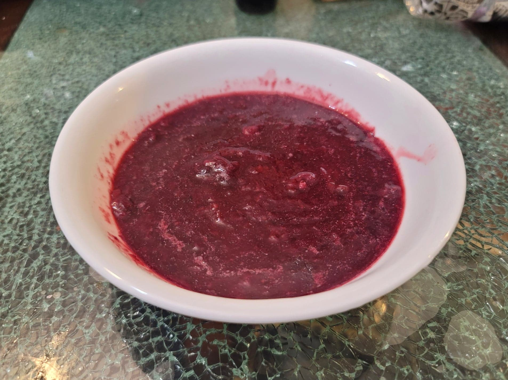

Wojapi

Ingredients:
- 3 cups Mixed berries
- 1/2 cup Water
- 2 tbsp Maple syrup OR Honey, or to taste
Instructions:
- Add the berries and water to a saucepan. Bring to a simmer and then reduce the heat to low.
- Let cook until the berries completely break down and the sauce has thickened to preference, about 30-60 minutes. Stir occasionally.
- Remove from the heat and stir in the sweetener. Serve over corn cakes, ice creams, or meats.